▲ 지난 회차 현장(참고용) — 삼락생태공원 야외 메인 스테이지 사진=한국관광공사
10월 2일 오늘 개막한 2026 부산국제록페스티벌은 4일(일)까지 사흘간 부산 사상구 삼락생태공원에서 열린다. 낙동강변 둔치에 무대를 세우는 야외 페스티벌이라 행사장 바로 앞까지 차를 댈 수 있을 거라 생각하기 쉽지만, 공식 안내의 무게는 확실히 '대중교통'에 실려 있다. 사상역에서 행사장까지 무료 순환 셔틀이 오전 9시 30분부터 밤 11시까지 5~10분 간격으로 다니고, 부산교통공사는 귀가가 몰리는 밤 9~11시에 2호선을 하루 4회씩 늘린다. 이 글은 라인업보다 자차로 갈 때 어디에 대고, 어떻게 들어가고, 끝난 뒤 어떻게 빠져나올지에 초점을 맞춰 공식 공지와 언론 보도를 정리했다.
1. 한눈에 보는 기본 정보 — 일정·장소·티켓
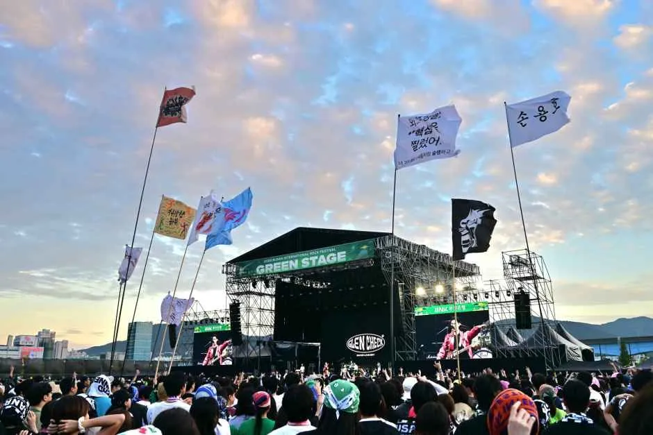
▲ 지난 회차 현장(참고용) — 그린 스테이지 앞 관객들과 깃발 사진=한국관광공사
행사는 2026년 10월 2일(금)부터 4일(일)까지 3일간 삼락생태공원(부산 사상구 삼락동)에서 열린다. 올해는 99개 팀이 출연하고 무대는 5곳으로, 헤드라이너가 서는 대형 무대 2곳과 신인·싱어송라이터가 서는 중소형 무대 3곳으로 구성된다고 서울신문이 보도했다. 지난해 관객은 약 7만 5천 명 규모로 알려졌고(파이낸셜뉴스), 올해도 토·일 티켓이 일찍 매진됐다는 보도가 나왔다. 그만큼 입장 때와 퇴장 때 사상 일대가 붐빌 수밖에 없다.
| 항목 | 내용 |
|---|---|
| 기간 | 2026년 10월 2일(금)~10월 4일(일), 3일간 |
| 장소 | 부산 사상구 삼락동 삼락생태공원 |
| 규모 | 99개 팀, 5개 무대(서울신문 보도 기준) |
| 티켓 가격(정규, 예스24 기준 검색 결과) | 3일권 266,000원 / 2일권(금·토) 193,000원 / 2일권(토·일) 193,000원 / 1일권(금·토·일 각 일자별) 120,000원 |
| 10월 2일(금) 당일권 | 공식 공지상 현장에서 한정 수량 판매(변동 가능) |
| 주소(내비 검색) | 부산 사상구 삼락동 29-46 삼락생태공원(한국관광공사 TourAPI 등록 주소). 정확한 행사장 출입구는 공식 지도 확인 |
| 문의 | 1877-1328 |
라인업은 교통이 핵심인 이 글의 범위를 벗어나 간단히만 짚는다. 공식 공지 기준으로 메가데스가 10월 2일 삼락 스테이지 헤드라이너로 확정됐고 3일에도 공연한다. 반면 어벤지드 세븐폴드는 10월 1일 출연 취소가 공지돼, 공식 공지에 따르면 예스24 티켓에서 10월 4일 밤 10시까지 수수료 없이 취소할 수 있고 예매수수료는 10월 6일부터 환불이 시작된다(세부 절차는 공식 공지 참고). 송골매(10월 4일) 등 나머지 출연진과 시간표는 10월 2일 자로 갱신된 타임테이블 공지가 이미지로 올라와 있어 이 글에서는 시간을 옮기지 않는다. 이 갱신은 삼락 스테이지 헤드라이너 교체에 따른 것으로, 주최 측은 일정 조정에 협조한 이승윤 측에 감사를 전했고 '무대 전환·준비 상황에 따라 공연 시간이 추가로 조정될 수 있다'고 안내했다(메가데스 공지도 같은 취지로 시간이 소폭 조정될 수 있다고 밝혔다). 공연 시각에 맞춰 이동하는 자차 방문자라면 당일 낮에도 공지를 한 번 더 열어 보자. 공연 순서는 반드시 공식 타임테이블로 확인하자.
부산국제록페스티벌 공식 홈페이지에서 타임테이블·공지 확인 가능2. 사상역 무료 순환 셔틀 — 공식 교통의 중심축
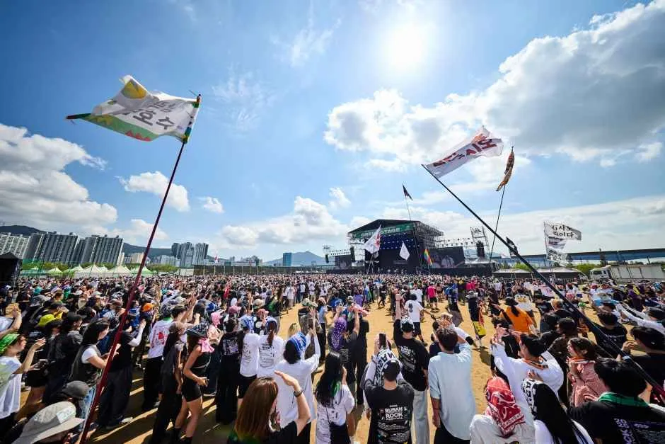
▲ 지난 회차 현장(참고용) — 깃발을 흔드는 관객들로 가득 찬 공연장 앞 사진=한국관광공사
공식 홈페이지는 '사상역 순환 셔틀 버스 안내'를 별도 공지로 올렸다. 지하철 2호선 사상역 3번 출구 인근과 삼락생태공원 굴다리 인근을 오가는 무료·선착순 셔틀이며, 대기 인원에 따라 증편 운행한다. 소요시간은 약 5~10분으로 안내됐다.
| 항목 | 내용 |
|---|---|
| 정류장 | 사상역(2호선) 3번 출구 인근 / 삼락생태공원 굴다리 인근 |
| 첫차 | 오전 9시 30분(사상역 출발) |
| 막차 | 오후 11시(삼락생태공원 출발) |
| 배차간격 | 5~10분(대기 인원에 따라 증편) |
| 요금·탑승 | 무료, 선착순 |
| 소요시간 | 약 5~10분 |
| 공식 공지 목록(10월 2일 확인) | 10월 2일 현재 공식 공지는 타임테이블 갱신, 10월 2일 출연진 변경, 어벤지드 세븐폴드 취소, 글로벌 서포트 부스, MD 안내, 사상역 셔틀 안내 순으로 올라와 있고 주차장 공지는 따로 없다 |
| 정류장 상세 위치 | 공식 공지 본문에서 지도는 확인하지 못함. 카카오맵 축제 전용 지도에서 셔틀 탑승 위치를 볼 수 있다고 스페셜타임스가 보도 |
자차 이동자에게 이 셔틀이 중요한 이유는 간단하다. 행사장 주변 주차는 쉽게 포화될 수 있어서, 사상역 인근에 차를 두고 셔틀로 들어가는 방식이 가장 변수가 적은 선택지가 되기 때문이다. 다만 사상역 인근 공영·민간 주차장의 정확한 위치·요금·수용 대수는 공식 자료에서 확인하지 못했다. 방문 전에 내비 앱으로 주차장 실시간 만차 여부를 확인하자.
3. 자차·주차 — '조기 만차' 전제로 짜는 법
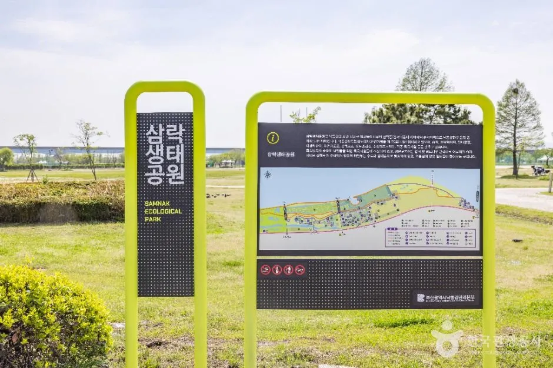
▲ 삼락생태공원 안내판. 공원 규모가 커서 구역과 주차장이 분산돼 있다 사진=한국관광공사
삼락생태공원에는 자체 주차장이 있지만, 대규모 인파가 몰리는 페스티벌 기간에는 일찍 찰 수 있다고 보는 편이 안전하다(특정 매체 보도로 확인한 내용은 아니며 일반적 예상이다). 이번 행사의 공식 주차 공지(요금·수용 대수·운영시간)는 우리가 확인한 공식 홈페이지 공지 목록에서 찾지 못했다. 공원 주차장 요금과 수용 대수는 확인하지 못했다. 같은 공원의 평소 구역 구성과 주차 정보는 삼락생태공원 코스모스·핑크뮬리 개화 가이드에서 볼 수 있다.
| 방법 | 핵심 | 주의 |
|---|---|---|
| 삼락생태공원 주차장 | 행사장과 가장 가까움 | 일찍 찰 수 있음(예상). 요금·수용 대수 미확인 |
| 홈플러스 서부산점·이마트 사상점 주차 후 도보 | 도보 약 15분으로 안내됨 | 대형마트가 행사 관람객 주차를 허용하는지, 이용 조건·시간 제한은 방문 전 직접 확인 필요(공식 공지 아님) |
| 사상역 인근 주차 + 무료 셔틀 | 셔틀 5~10분 간격, 23시까지 | 사상역 인근 주차장 정보는 확인하지 못함 |
| 카카오T 셔틀(타 지역 출발) | 입장권 결합 상품도 있음 | 셔틀 단독 35,000~102,000원, 입장권 결합 167,000~325,000원(노선별 상이), 선착순 한정 수량 |

▲ 삼락생태공원 안내도(평소 모습). 공원이 넓어 구역별 위치를 미리 익혀 두면 헤매지 않는다 사진=한국관광공사
ℹ️ 대형마트 주차는 '대안'이지 '공식 안내'가 아니다
홈플러스 서부산점·이마트 사상점에서 도보 15분이라는 정보는 공식 공지가 아니라 매체·후기에서 나온 대안이다. 마트 주차장은 영업 고객용이라 행사 기간 유료 전환·시간 제한·출입 통제가 있을 수 있다. 장시간 주차가 가능한지는 현장 안내를 따르고, 우선은 대중교통 병행을 전제로 계획하는 편이 안전하다.
4. 대중교통 — 2호선·경전철·버스
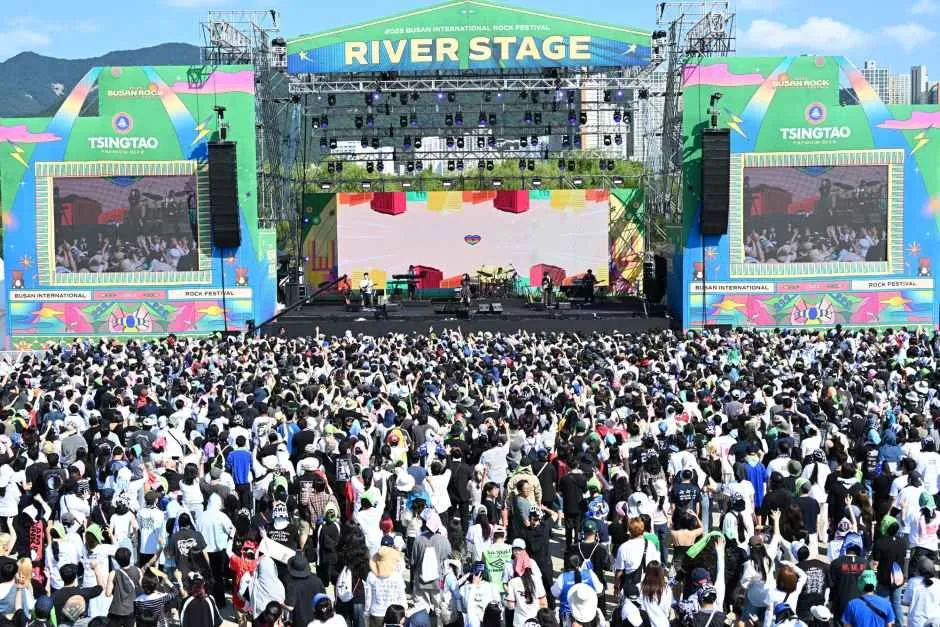
▲ 지난 회차 현장(참고용) — 대형 무대(리버 스테이지) 앞에 빼곡히 모인 관객들 사진=한국관광공사
부산교통공사는 행사 기간 3일 동안 오후 9~11시에 도시철도 2호선 열차를 하루 4회씩, 총 12회 증편한다. 행사장 인근 역에는 안전 인력도 추가 배치한다. 공식 홈페이지에도 '지하철 증편 안내' 공지가 올라와 있지만 증편 시각표는 이미지여서 본문 텍스트로는 확인하지 못했다. 막차·증편 열차 시각은 공식 이미지 공지에서 직접 확인해야 한다.
| 수단 | 내용 | 출처 성격 |
|---|---|---|
| 지하철 2호선 사상역 | 3번 출구 인근에서 무료 순환 셔틀 탑승 | 공식 공지 |
| 2호선 증편 | 오후 9~11시 하루 4회, 3일간 총 12회 | 부산교통공사 발표(파이낸셜뉴스·아시아경제 보도) |
| 부산김해경전철 괘법르네시떼역 | 1번 출구에서 도보 이동이 가능하다는 안내가 있으나 도보 시간은 출처마다 달라 확인하지 못함 | 언론·후기 |
| 시내버스 | 123번, 126번 이용 후 삼락생태공원 하차 가능(검색 결과 기준) | 비공식 정보, 출발 전 재확인 필요 |
대중교통이 불편한 지역에서 온다면 파크앤라이드 방식도 대안이다. 사상역이나 인근 환승역 근처에 주차한 뒤 지하철·셔틀로 들어가는 식이다. 이때도 주차장 만차와 귀가 시 막차를 함께 따져야 한다.
5. 자차 이동자 하루 동선 — 입장 전후 팁
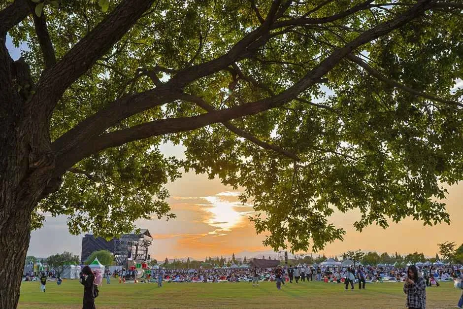
▲ 지난 회차 현장(참고용) — 해 질 무렵 잔디밭에서 공연을 기다리는 관객들 사진=한국관광공사
공식 자료와 일반적인 야외 페스티벌 운영 방식을 바탕으로 한 팁이다. 시간표 등은 공식 공지가 우선이다.
| 시점 | 할 일 | 이유 |
|---|---|---|
| 출발 전 | 공식 공지·타임테이블 재확인, 내비에 목적지(삼락생태공원)와 후보 주차장 2곳 저장 | 출연진·시간이 10월 1~2일에도 바뀜 |
| 오전~점심 | 가능하면 일찍 도착해 주차 후 입장 | 공원 주차장 조기 만차 가능성 |
| 공연 중 | 손목밴드·티켓 관리, 귀가 동선 미리 결정 | 카카오맵 현장톡으로 혼잡도 공유 가능(스페셜타임스 보도) |
| 공연 종료 직후 | 헤드라이너가 끝나자마자 일제히 퇴장하므로 바로 이동하지 말고 시간차를 둠 | 지하철 증편은 밤 9~11시, 셔틀은 23시까지(삼락 출발) |
| 귀가 운전 | 음주 운전 금지, 피로 누적 시 휴식 | 야외 장시간 관람 후 졸음운전 위험 |
✅ 자차 방문 전 확인할 것
· 공원 주차장 요금·수용 대수는 공식 확인 못 함 — 현장 안내 우선
· 아이와 함께라면 공식 공지 기준 삼락테마파크가 10월 2~4일 11:00~20:40 운영, 1회 5,000원
· 마트 주차는 이용 조건을 먼저 확인(공식 안내 아님)
· 셔틀은 사상역 3번 출구 인근 ↔ 삼락생태공원 굴다리 인근, 09:30~23:00
· 증편 열차 시각은 공식 이미지 공지 확인
· 음주 후 운전 금지
6. 귀가 — 끝난 뒤 한꺼번에 몰리는 시간대
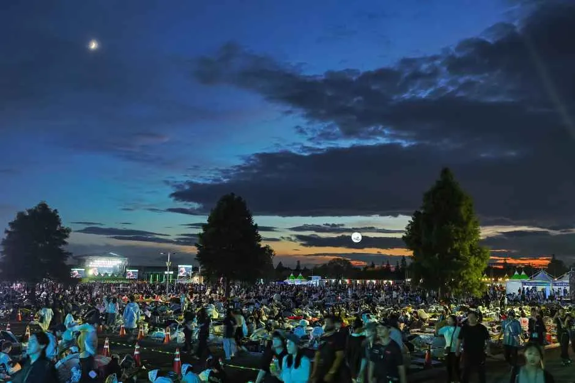
▲ 지난 회차 현장(참고용) — 해가 진 뒤 잔디밭을 가득 메운 관객들 사진=한국관광공사
공연이 끝나는 밤 시간대에는 셔틀 정류장과 사상역에 인파가 한꺼번에 몰린다. 공식 공지상 셔틀은 삼락생태공원 출발 기준 오후 11시까지, 지하철은 밤 9~11시 증편이다. 마지막 공연 종료 시각이 이 시간과 어떻게 맞물리는지는 갱신 타임테이블로 확인해야 하며, 우리가 확인한 범위에서는 확정 종료 시각을 단정할 수 없다.
- 자차: 마지막 무대 직전 일부 관객이 먼저 빠져나가는 흐름을 이용하되, 안전을 우선한다.
- 셔틀: 선착순이므로 줄이 길면 1~2회 배차를 보내고 이동한다.
- 지하철: 사상역에서 환승 구간 혼잡을 감안해 여유 있게 이동한다.
공원 자체의 가을 풍경은 삼락생태공원 핑크뮬리·코스모스 기사에서 확인할 수 있어, 페스티벌이 끝난 뒤 한적한 주말에 다시 찾아볼 만하다.
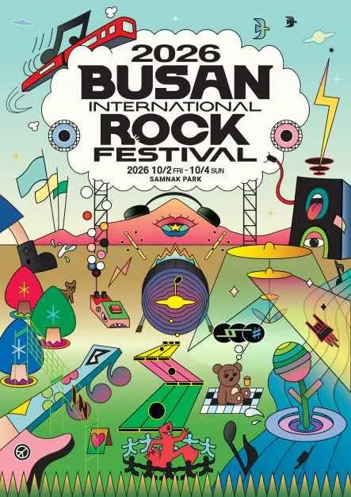
▲ 2026 부산국제록페스티벌 공식 포스터(2026.10.2~10.4, 삼락공원) 포스터=부산국제록페스티벌 공식(한국관광공사 제공 자료)
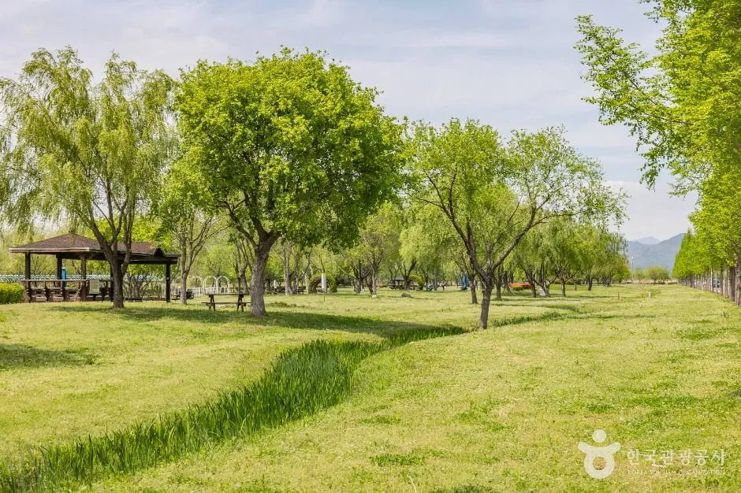
▲ 행사장 밖 삼락생태공원의 버드나무 산책로(평소 모습) 사진=한국관광공사
7. 날씨·현장 대비와 행사 전후 연계 코스
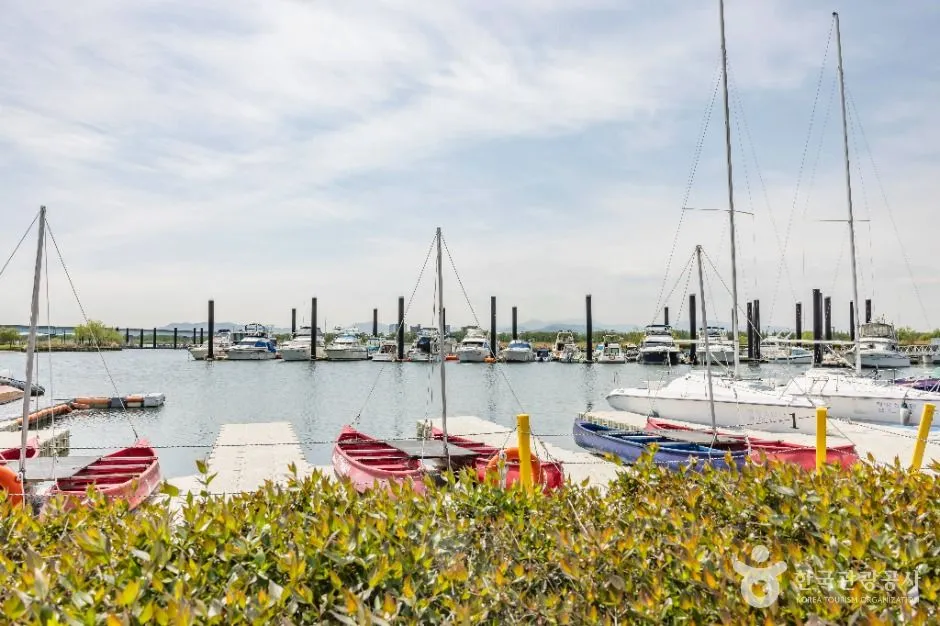
▲ 공원 일대의 요트 계류장 풍경(평소 모습). 행사 전후 짬이 나면 낙동강변 산책 코스로 이어 가기 좋다 사진=한국관광공사
야외 페스티벌은 날씨와 이동 시간이 곧 일정이다. 아래는 확인된 사실과 일반적인 준비 사항을 구분해 정리했다. 주말(10월 3~4일) 부산 날씨는 검색으로 일관된 예보를 확인하지 못했으므로, 출발 당일 기상청 예보를 직접 확인하길 권한다.
| 항목 | 내용 | 확인 수준 |
|---|---|---|
| 우천 대비 | 비옷(우비) 준비를 권하는 후기가 있음. 우산은 시야를 가려 공연장에서 제한될 수 있으므로 반입 규정은 공식 안내 확인 | 2025년 회차 개인 후기, 2026 공식 규정은 확인 못 함 |
| 괘법르네시떼역 접근 | 2호선·부산김해경전철 환승역인 괘법르네시떼역에서 도보 3~4분이라는 후기가 있음(앞서 본 대로 출처마다 소요시간이 달라 단정하지 않음) | 개인 후기(2025년) |
| 사상역 접근 | 사상역에서 도보 약 10분이라는 후기와 무료 셔틀 운행이 함께 언급됨. 공식 셔틀은 5~10분 소요 | 셔틀은 공식, 도보는 후기 |
| 1일권 현장 구매 | 10월 2일(금) 당일권은 현장 한정 수량 판매. 매진 시 입장 불가이므로 현장 구매를 믿고 차를 몰고 오는 것은 위험 | 공식 공지 |
| 환불·취소 | 어벤지드 세븐폴드 취소 관련 수수료 없는 취소는 예스24에서 10월 4일 밤 10시까지 | 공식 공지 |
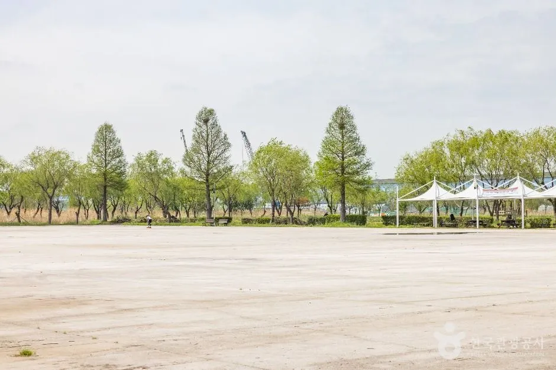
▲ 공원 내 넓게 트인 공터(평소 모습). 행사 기간 이 구역이 어떻게 쓰이는지는 확인하지 못했다 사진=한국관광공사
행사 전후에 차로 움직일 계획이라면 같은 부산 안에서 연계할 수 있는 정보도 있다. 시내 방문지별 주차 난이도는 부산 드라이브 여행지 주차 가이드에서, 11월 7일 예정된 대형 행사의 통제·주차 이슈는 부산불꽃축제 교통·주차 가이드에서, 같은 시기 도심 행사의 교통 대안은 부산국제영화제 교통·주차 가이드에서 볼 수 있다. 록페스티벌 당일에는 사상 일대에 인파가 몰리므로, 일정을 겹쳐 잡기보다 하루 한 행사만 소화하는 편이 안전하다.
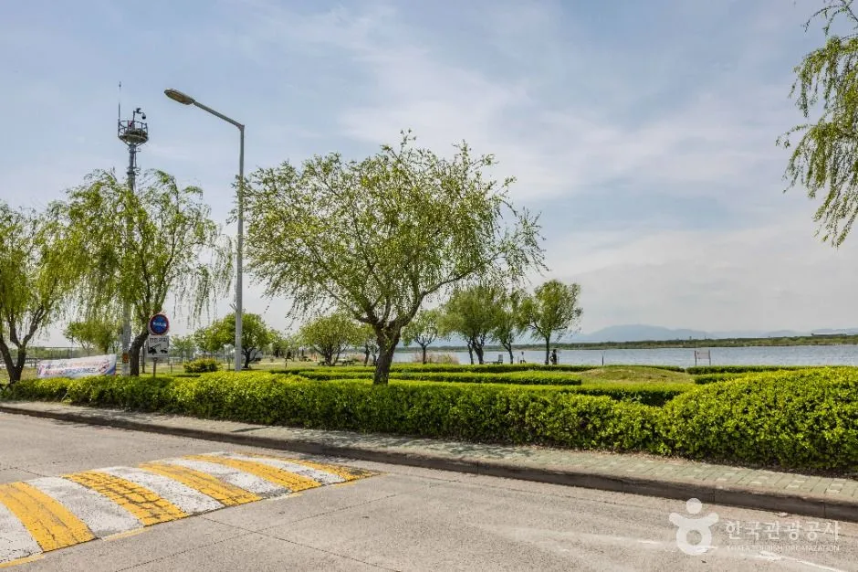
▲ 낙동강변 쪽에서 본 삼락생태공원의 정원수 구간(평소 모습) 사진=한국관광공사
8. 요약
2026 부산국제록페스티벌은 10월 2~4일 삼락생태공원에서 열리며, 교통의 공식 중심은 사상역 3번 출구 인근에서 출발하는 무료 순환 셔틀(09:30~23:00, 5~10분 간격)과 2호선 야간 증편(21~23시 하루 4회, 총 12회)이다. 공원 주차장은 일찍 찰 수 있다고 보고 계획하는 편이 안전하며, 홈플러스 서부산점·이마트 사상점 도보 15분 대안은 공식 안내가 아니라서 이용 조건을 직접 확인해야 한다.
공원 주차장 요금·수용 대수, 사상역 인근 주차장 정보, 증편 열차 정확한 시각, 갱신 타임테이블의 종료 시각, 주말 날씨 예보는 확인하지 못했다. 10월 2일 현재 공식 공지 목록에도 주차장 공지는 없다. 어벤지드 세븐폴드는 10월 1일 출연이 취소됐고 메가데스가 10월 2일 헤드라이너로 확정됐으니, 출발 전 공식 홈페이지 공지를 다시 보자.